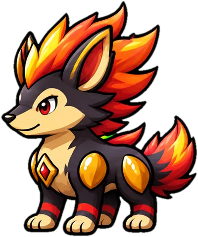

 FireDark
FireDarkTap a stage to read its story.
A compact four-legged pup cloaked in deep darkness, Pymlox wears a wild crest of orange-red flame that flares around its face like a burning halo. Its paws leave faint scorch marks on hollow ground, and it moves fast - always darting between the ghost-hollow wisps as though chasing something only it can see. The guardians say it was born from an ember that fell into a ghost-flame candle and would not go out, stubborn and bright against the hollow's cold grey.
Field note: Pymlox's fire-crest doubles in size whenever it hears a name it has never heard, then slowly settles back down as it thinks.
Ghost Hollow. Pymlox and its family are found in the Ghost Hollow. See everyone who lives there.
Share a Bond Food that matches its types to become friends. Pymlox loves:
A Bond Food is not a trick. It joins your spirit with the Kimuro's spirit, and only when it chooses you.
Print the Kimuro adventure packs: mazes, cards, a board game and Bond Mark medals.
See the printable packs